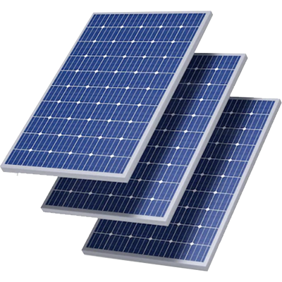

Como Funciona A Energia Solar
O funcionamento da energia solar acontece da seguinte maneira: os módulos fotovoltaicos captam a luz do sol e produzem a energia. Essa é transportado até o inversor solar que irá converter a energia gerada pelo sistema para as características da rede elétrica. A energia é gerada graças ao efeito fotovoltaico.
Para que essa conversão da radiação solar em energia elétrica seja realizada de forma mais eficiente, é ideal que a luz solar incida diretamente nas células fotovoltaicas. Assim, quanto maior a incidência direta nos painéis solares, maior será a geração de energia.
A posição perfeita para as placas solares, portanto, é aquela na qual não há áreas de sombras, fazendo com que elas recebam os raios solares durante o dia inteiro. Isso proporciona a liberação ininterrupta de corrente elétrica, que será capturada pelos filamentos condutores dos painéis fotovoltaicos.
Após esse processo, a energia gerada é encaminhada para o inversor solar. Esse equipamento transformará a energia produzida no módulo fotovoltaico, que é do tipo corrente contínua (CC), em corrente alternada (CA). Isso porque, quando percorrida em um circuito, a corrente contínua não muda o seu sentido de circulação, havendo a necessidade de convertê-la em corrente alternada para que ela se torne apropriada para o consumo.